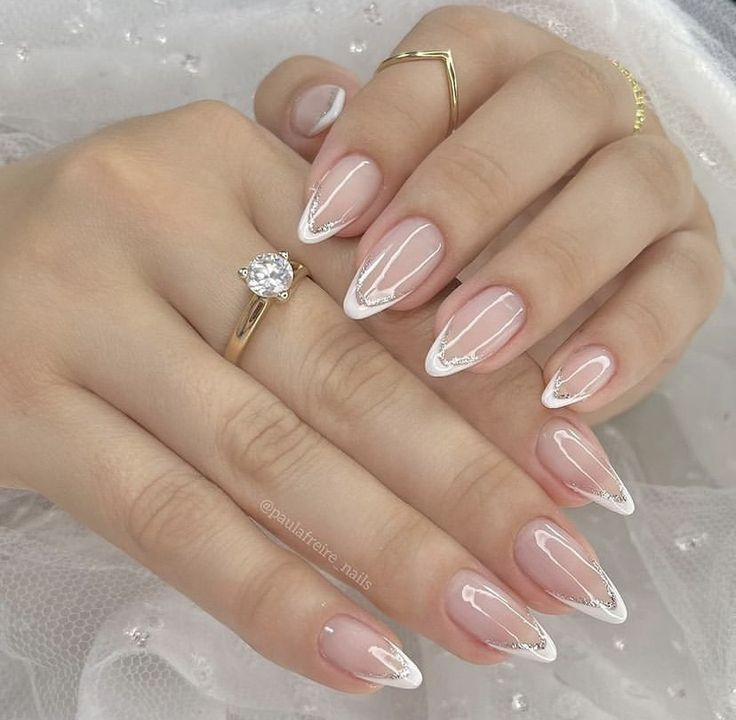
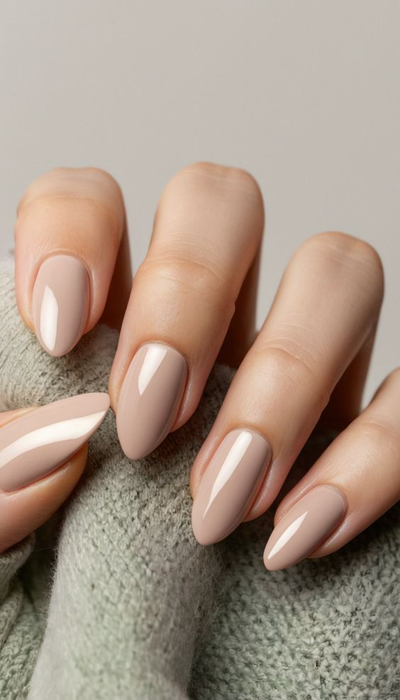
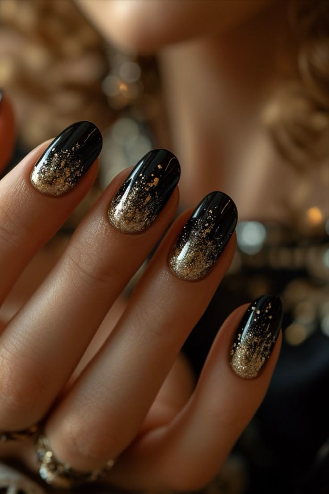
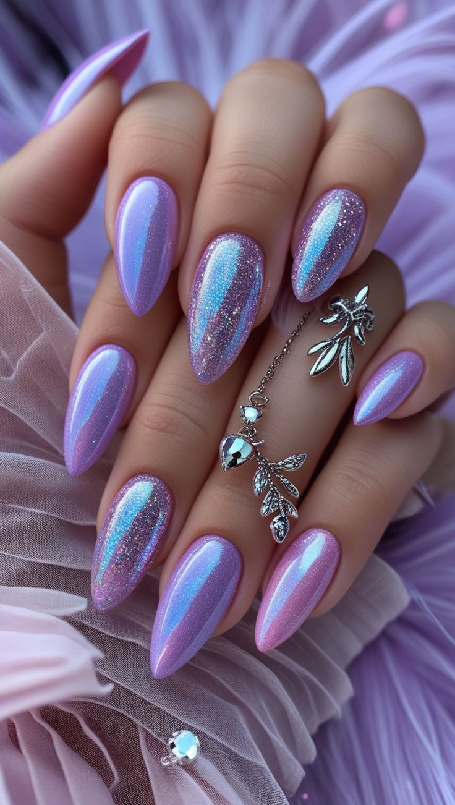
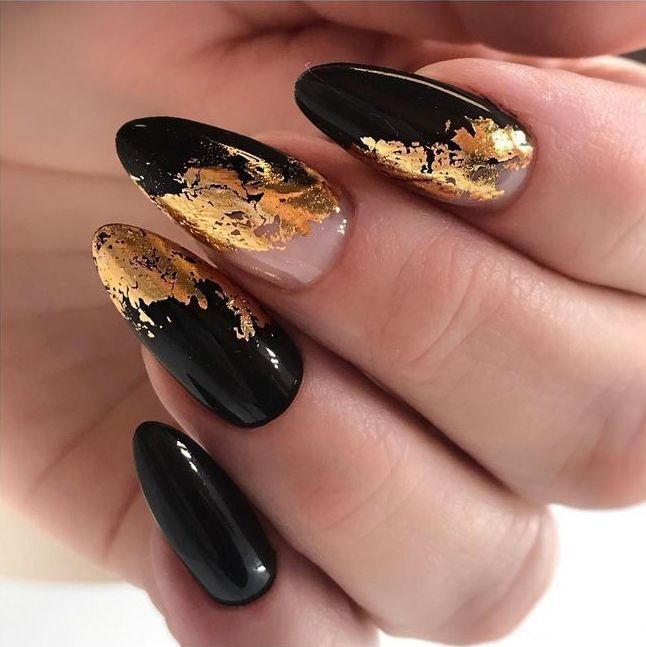

Las celebraciones y eventos piden uñas que complementen tu vestido y la ocasión. Aquí
recopilamos propuestas elegantes y versátiles —desde bodas hasta cócteles— para que elijas
según el nivel de formalidad y tu estilo personal.
1
Bodas: elegancia atemporal

Para bodas se recomiendan tonos nudes, rosados pálidos o un blanco lechoso con acabados
satinados o brillo suave. Los detalles finos (strass pequeños, lineas doradas) en una o
dos uñas ofrecen sofisticación sin competir con el vestido.
2
Eventos corporativos: pulcritud y sobriedad

Opta por tonos discretos (beige, taupe, burdeos oscuro) y formas conservadoras. Evita
excesos en brillo y aplica un top coat resistente para mantener una apariencia profesional
durante jornadas largas.
3
Cóctel y noche: impacto moderado

Para eventos nocturnos, colores intensos (rojo, azul marino, negro con brillo) y toques
metalizados funcionan muy bien. Considera acentos en una o dos uñas para mantener equilibrio.
4
Celebraciones temáticas: creativo y acorde

Para fiestas temáticas (festivales, cumpleaños) puedes jugar con colores, degradados y
nail art más expresivo. Mantén la técnica profesional para asegurar durabilidad y detalle.
5
Accesorios y acentos: menos es más

Los acentos como foil, microcristales o pequeñas aplicaciones añaden lujo cuando se usan
con moderación (1-2 uñas). Alinea los metales con tus accesorios (joyería) para un look
armonioso.
Comentarios
Dana Miranda
10/10/2025
Excelentes ideas, me ayudaron a elegir el diseño para mi futura boda, bendiciones.